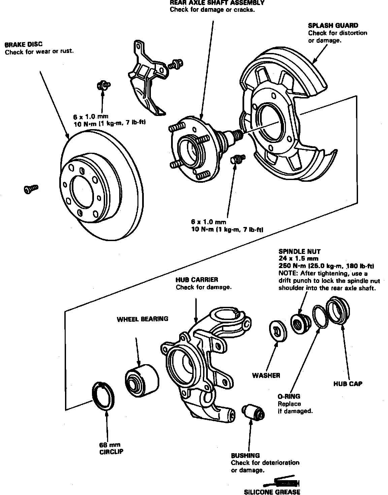
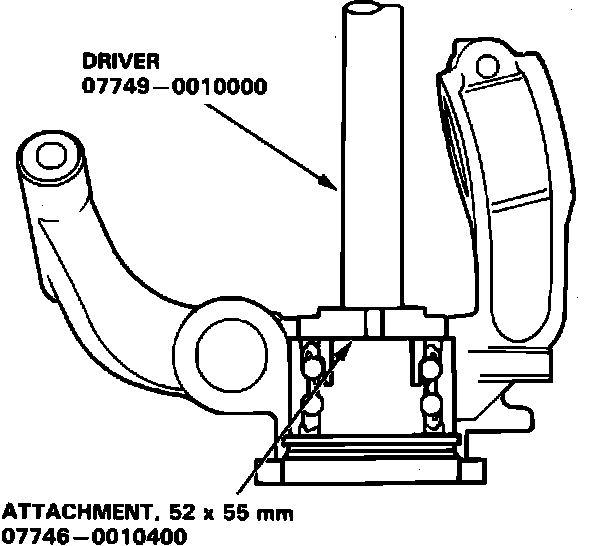
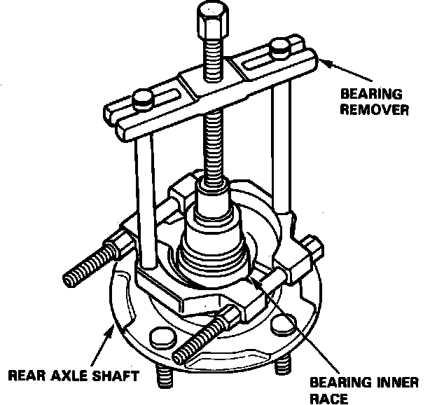
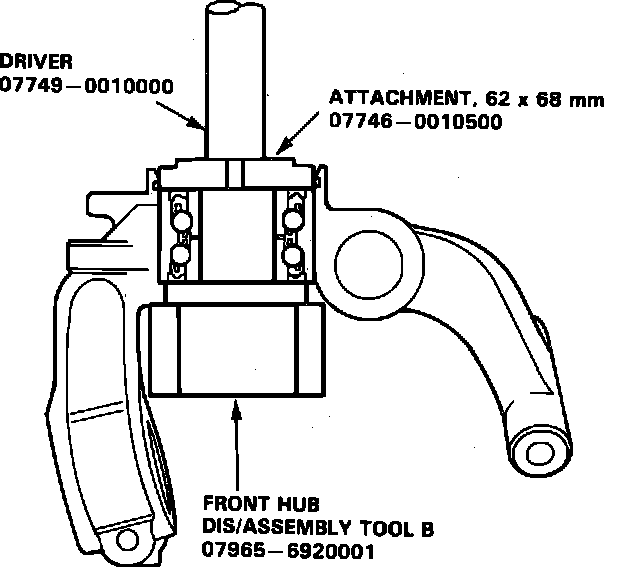

Rear
Fig. 6 Exploded View Of Rear Suspension Components:

Fig. 8 Exploded View Of Hub Carrier & Rear Axle Shaft:

Fig. 17 Wheel Bearing Removal:

Fig. 18 Wheel Bearing Inner Race Removal:

Fig. 19 Wheel Bearing Installation:

1. Remove hub carrier assembly as shown in Fig. 6.
2. Remove splash guard and circlip from hub carrier, Fig. 8.
3. Remove bearing from rear hub, then the bearing inner race from axle shaft, Figs. 17 and 18.
4. Press new bearing into hub carrier as shown, Fig. 19.